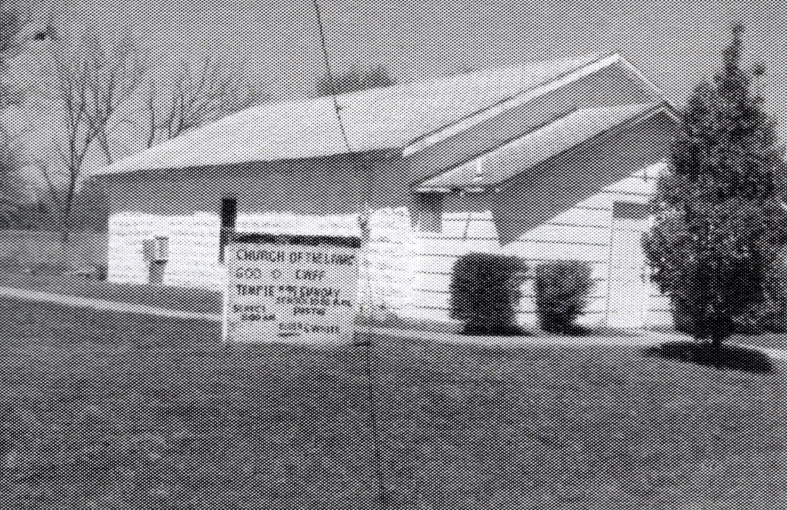
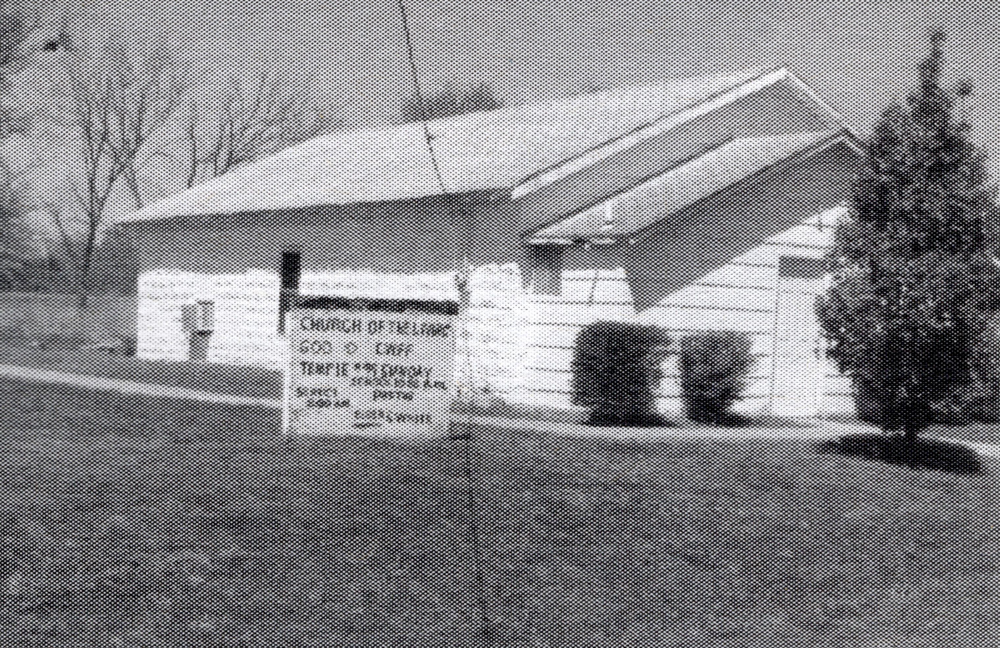
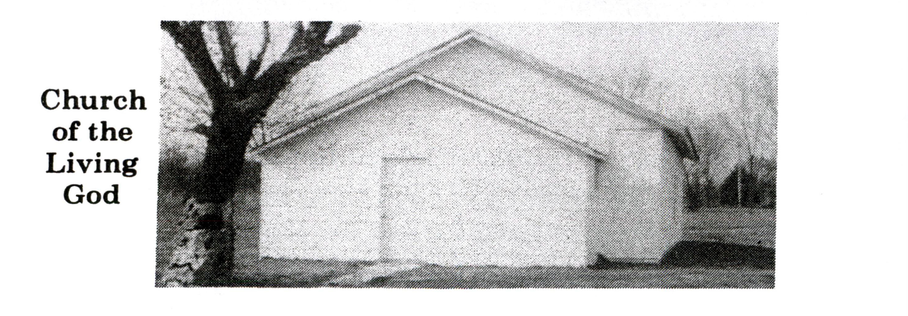

Church of the Living God
History
Of the eight churches in Clearview’s early history, the only congregation that still exists is the Church of the Living God. The denomination traces its origins to Mary Magdalena Lewis Tate, often known as “Mother Tate,” an African American holiness and Pentecostal evangelist who began preaching in Tennessee and Kentucky and organized followers into groups known as “Do Rights” before founding the Church of the Living God, the Pillar and Ground of the Truth, in 1903.
The church emphasized holiness, clean living, sanctification, testimony, Bible study, and spirited preaching, and it grew through revivals, assemblies, and traveling ministers. Clearview’s Church of the Living God reflects that broader tradition of Black religious leadership and community-building.
Its building was constructed with stones reused from the demolished Creek Seminole Agricultural College, which once stood on the hill and served the Clearview community from 1914 to 1919. For many years, preachers from Okmulgee and Tulsa traveled to Clearview to deliver sermons.
The congregation usually meets on the first and third Sundays, continuing one of the town’s longest surviving religious traditions.


